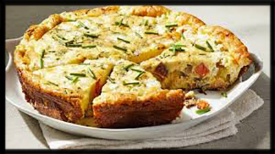

<!doctype html>


<html>


</html>

    <head>
    <title>My Favorite Food</title>
    </head>
<body>
    <h1>[One of] My Favorite Food[s]!</h1>
    <h2>Mediteranean Fritata</h2>
    
    <p></p>
    <p>A simple, tasty, one-pan-wonder that you can change up any time, with anything you like. Serves 4.
    </p>
    <p></p>
    <h3>Ingredients & Directions</h3>
    <p></p>
    <p>Ingredients</p>
    <p></p>
    <ul>
    <li>8 eggs, beaten</li>
    <li>i/2 cup feta cheese, crumbled</li>
    <li>1/2 pound brown mushrooms, sliced</li>
    <li>1 red pepper diced</li>
    <li>1 medium zucchini, diced</li>
    <li>3/4 cups bacon, hamburger, or left-over steak, sliced</li>
    <li>2-4 green onions, chopped</li>
    <li>2-4 cloves of garlic</li>
    <li>a little salt and pepper to taste</li> 
    </ul>
    <p></p>
     <p>Directions</p>
    <p></p>
    <ol>
    <li>Saute mushrooms on med high heat with olive oil or butter until almost browned.</li>
    <li>Add meat, stir occasionally for a minute or two</li>
    <li>Add veggies, cook until tender but not mushy</li>
    <li>Add eggs and lower heat to medium</li>
   <li>Pick the sides of the dish up with a spatula and tilting the pan to let the egg run under the edges for quicker cooking.</li>  
    <li>sprinkle the feta evenly over the top</li>
    <li>Turn on the oven broiler to high and place the pan under the fire until the top is dry and the edges are just turning brown</li>
    <li>Serve with tempenade and toast, or anything else you can think of!</li>
    </ol>
    <p> To discover delicious variations and serving suggestions, check out <a href="https://cookieandkate.com/best-frittata-recipe">this webpage.</a>
    </p>
</body>


